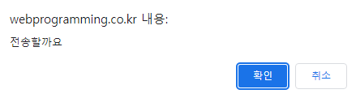

확인 다이얼로그 confirm("메시지") 함수 -“메시지”를 출력하고 ‘확인/최소(OK/CANCEL)’버튼을 가진 다이얼로그 출력 -‘확인’ 버튼을 누르면 true, '취소' 버튼이나 강제로 다이얼로그를 닫으면 false 리턴 사용 방법 var ret = confirm("전송할까요"); if(ret == true) { // 사용자가 "확인" 버튼을 누른 경우 } else { // 취소 버튼이나 다이얼로그를 닫은 경우 } 실행결과 